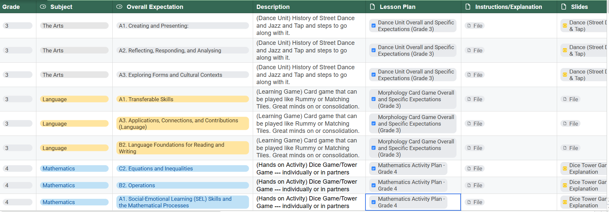

These artifacts demonstrate databases and resources I have gained through experiences and collaboration with my peers.
① the thingLesson Plan Database
The first artifact is a database of lesson plans shared by several of my peers, providing a collection of different teaching ideas, approaches, and resources that I can draw upon in my own practice.

① the thing Resource List Example
A collection of resources shared by students and the professor from another class, providing a variety of teaching materials, ideas, and perspectives that can support my future practice.